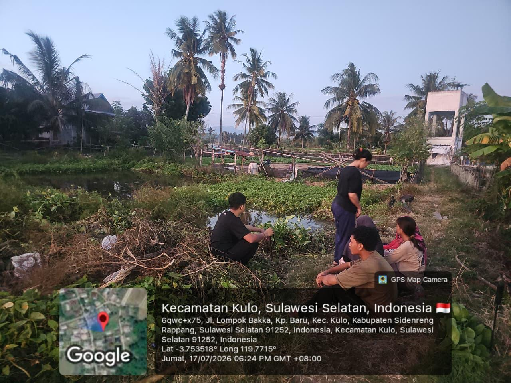
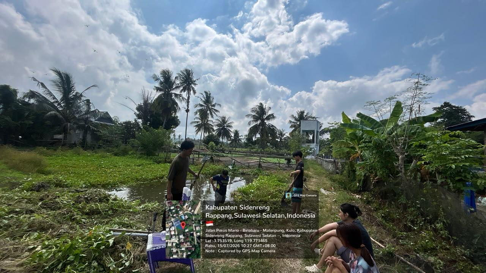
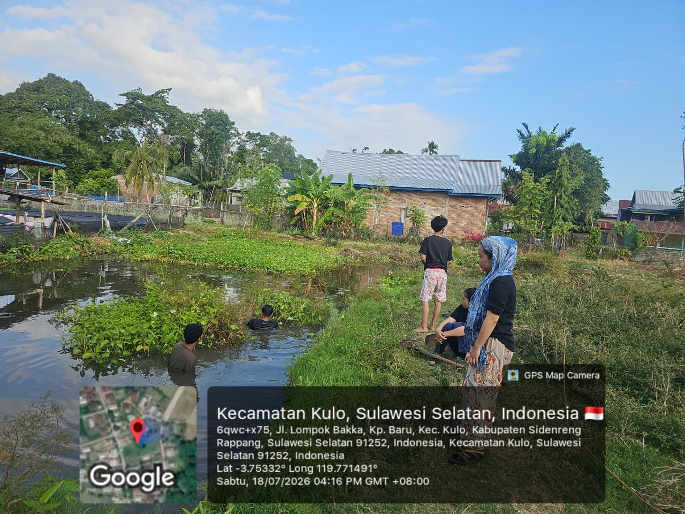
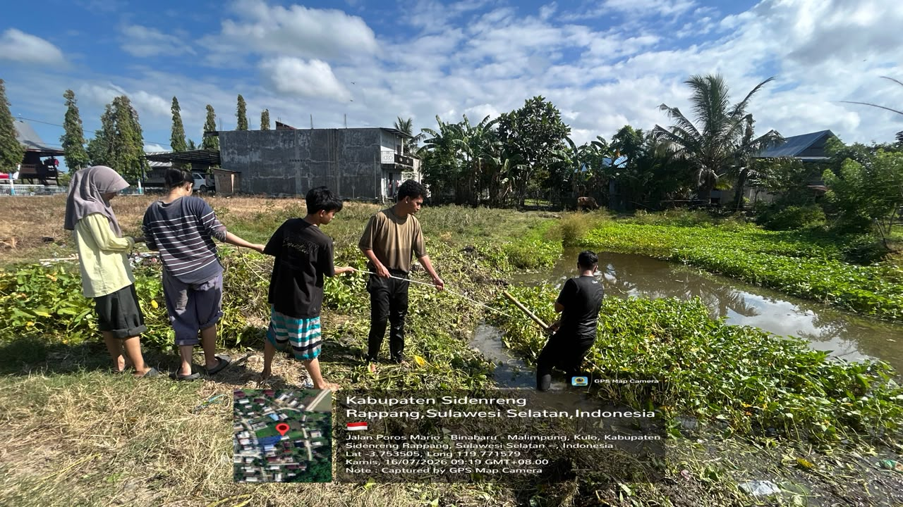
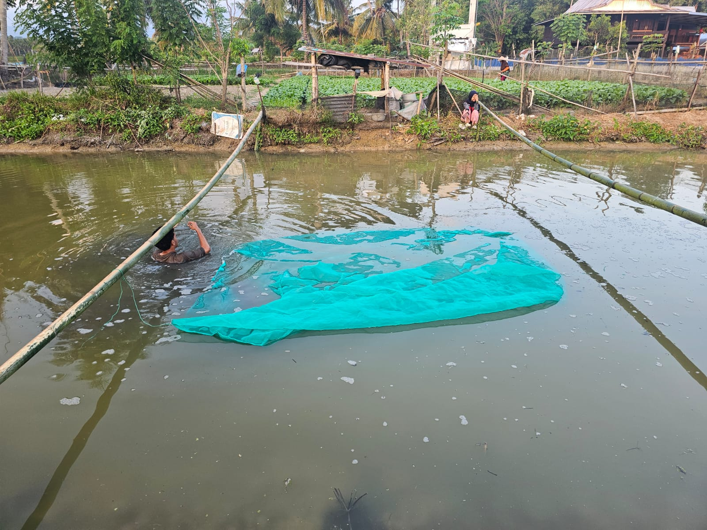

Keunggulan Keramba SMARTFISH
Kombinasi pengelolaan ramah lingkungan dan teknologi pemeliharaan intensif untuk menghasilkan ikan nila bermutu prima.
Sirkulasi Air Alami Bebas Stres
Memanfaatkan debit air alami yang terus berganti secara kontinu. Air yang bergerak menjaga kejernihan dan kandungan oksigen terlarut tetap prima sehingga ikan aktif bergerak dan bebas stres.
Manajemen Pakan Protein Tinggi
Diberikan asupan pelet khusus dengan kandungan protein terstandar 32-35%. Jadwal pemberian makan disiplin menjamin efisiensi konversi pakan (FCR) maksimal dan pertumbuhan seragam.
Biosecurity & Imunitas Kuat
Sanitasi jaring dan kolam terkontrol berkala mencegah penumpukan amonia dan risiko hama parasit. Ikan tumbuh higienis tanpa menggunakan obat-obatan kimia berbahaya.
Revitalisasi Kolam Terbengkalai
Inisiatif nyata memberdayakan sumber daya air yang tadinya tidak terurus menjadi lahan produktif bernilai ekonomi dan memperkuat ketahanan pangan warga sekitar.

NILA
Selamat datang di rumah bagi bibit perenang tangguh. Keramba jaring berukuran 2x3 meter ini menggunakan sistem sirkulasi air alami yang memastikan ikan nila (Tilapia) bebas stres dan tetap sehat. Dilengkapi dengan asupan pelet berprotein tinggi dan daya tahan imun super kuat, bibit-bibit ini siap tumbuh maksimal.
Mulai masuk pada Agustus 2026, kami menargetkan panen melimpah pada bulan November hingga Desember 2026. Mohon doanya, dan ingat: boleh difoto, tapi jangan diberi makan sembarangan!
Roadmap Siklus Budidaya 2026
Perjalanan 4 bulan dari penebaran bibit unggul hingga masa panen raya yang melimpah.
Penebaran Bibit Awal
Bibit ikan nila pilihan ukuran 5-7 cm ditebar ke dalam keramba jaring. Aklimatisasi air dilakukan untuk mencegah bibit kaget suhu.
Selesai DitebarFase Pertumbuhan & Grading
Pemberian pakan pelet protein 35% secara disiplin. Pemilahan ukuran (grading) untuk memastikan pertumbuhan merata.
Sedang BerlangsungFinishing & Pra-Panen
Pengecekan bobot rata-rata ikan (sampling) dan pembilasan air segar agar daging padat, bersih, dan bebas aroma lumpur.
MendatangPanen Raya
Pemanenan serentak hasil budidaya berbobot 300-400 gram per ekor, siap dinikmati dengan mutu daging segar dan higienis.
Target PanenTata Tertib Area Keramba
Mari bersama-sama menjaga kenyamanan lingkungan dan kesehatan ikan nila kesayangan kita.
Bebas Berfoto & Dokumentasi
Pengunjung sangat diperbolehkan mengambil foto, video, ataupun membuat konten kreatif di sekitar area kolam dengan tetap berhati-hati.
Jangan Diberi Makan Sembarangan!
Makanan sisa, roti, snack, atau benda asing dapat meracuni ikan dan memicu amonia tinggi yang berakibat fatal pada keramba.
Jaga Kebersihan Lingkungan
Selalu buang sampah pada tempat sampah yang telah disediakan dan jaga kelestarian area sekitar kolam.
Hindari Mengguncang Keramba
Jangan menghentakkan kaki atau mengguncang jaring apung agar ikan tetap tenang, tidak panik, dan terbebas dari stres.
DOKUMENTASI
Galeri rekaman visual keramba budidaya ikan nila SMARTFISH.





